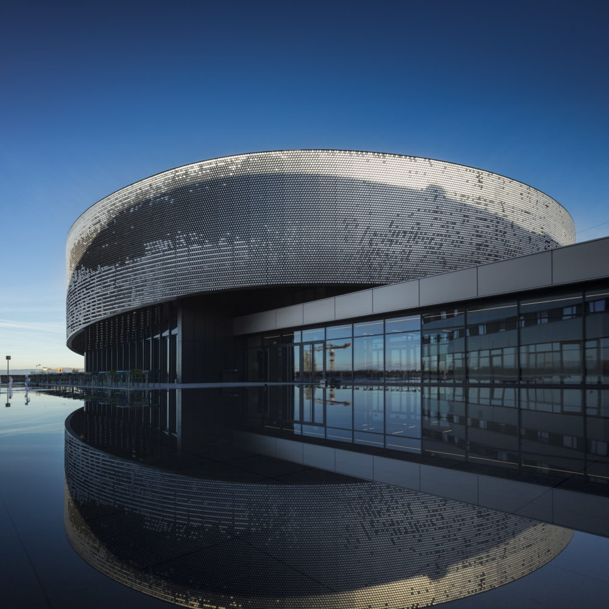

Loisirs / Aquarium
Aquatis 2002 – 2017
Conception du parcours de visite, conception des décors artificiel et naturel Conception et réalisation de la serre, conception des aquariums Traitement des eaux aquariums Revalorisation des eaux météorologiques Filtration mécanique et biologique Fontaine décoratif – miroir d’eau extérieur, cascades
Voir la fiche projet